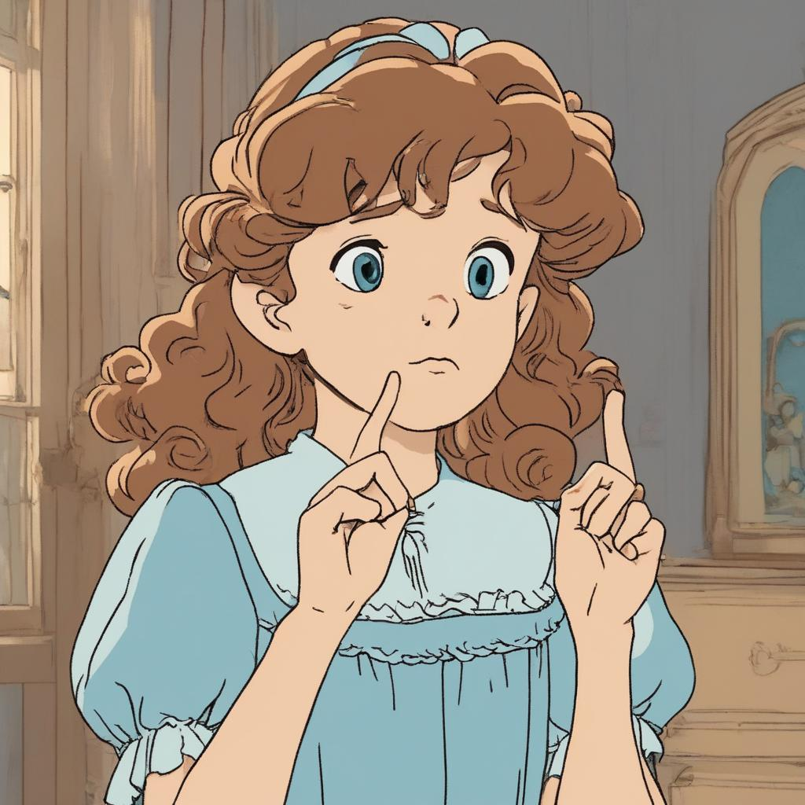
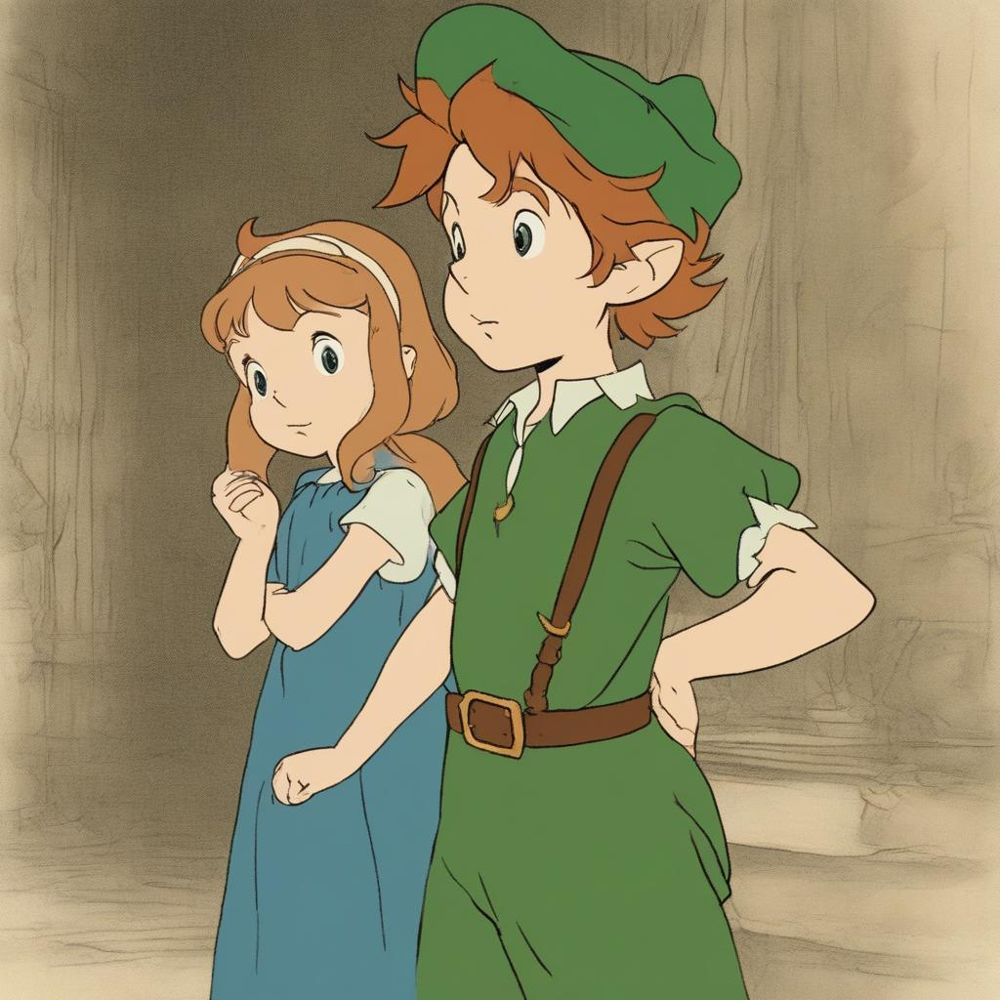
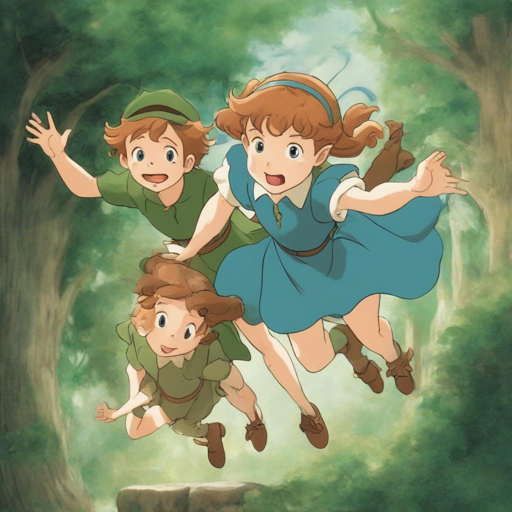
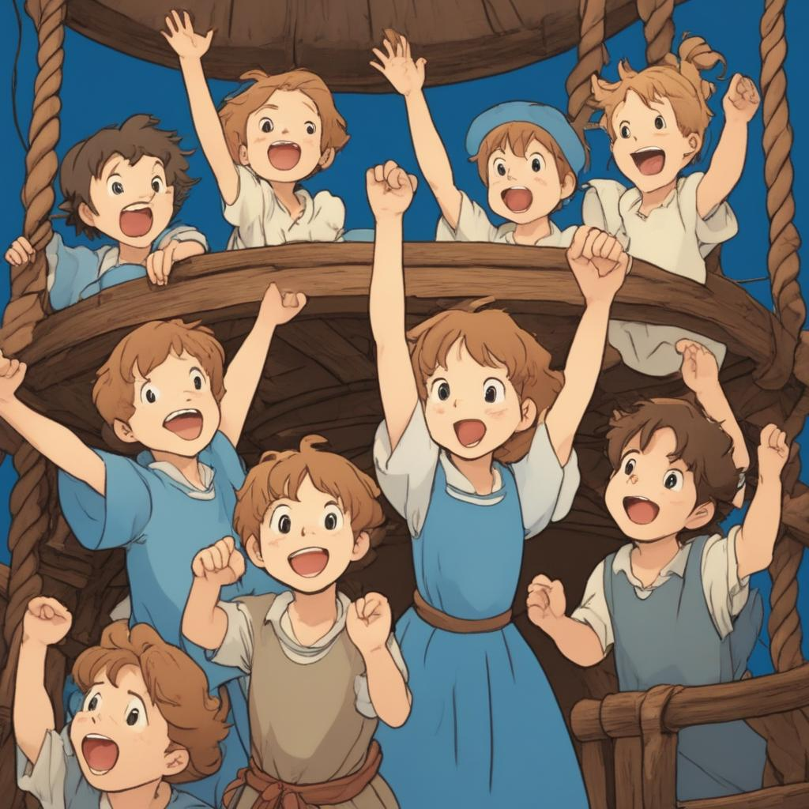
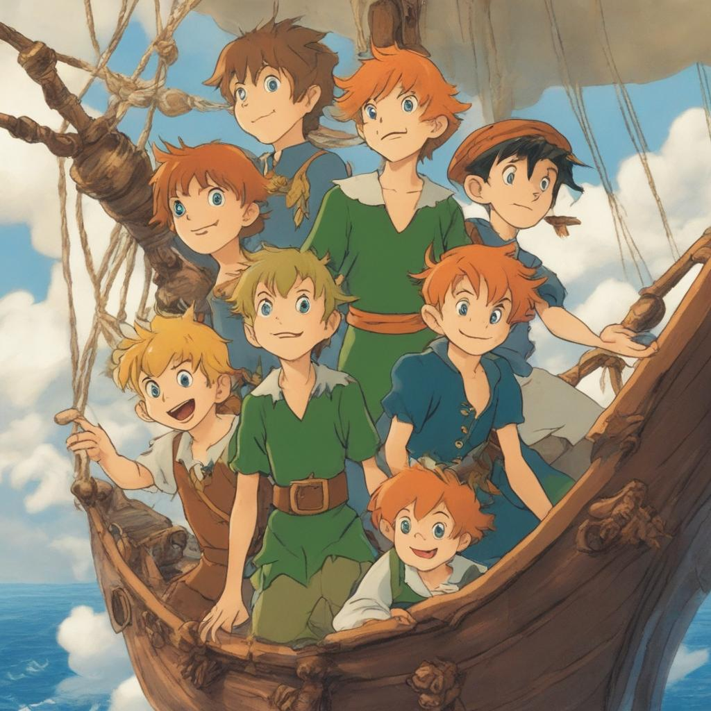
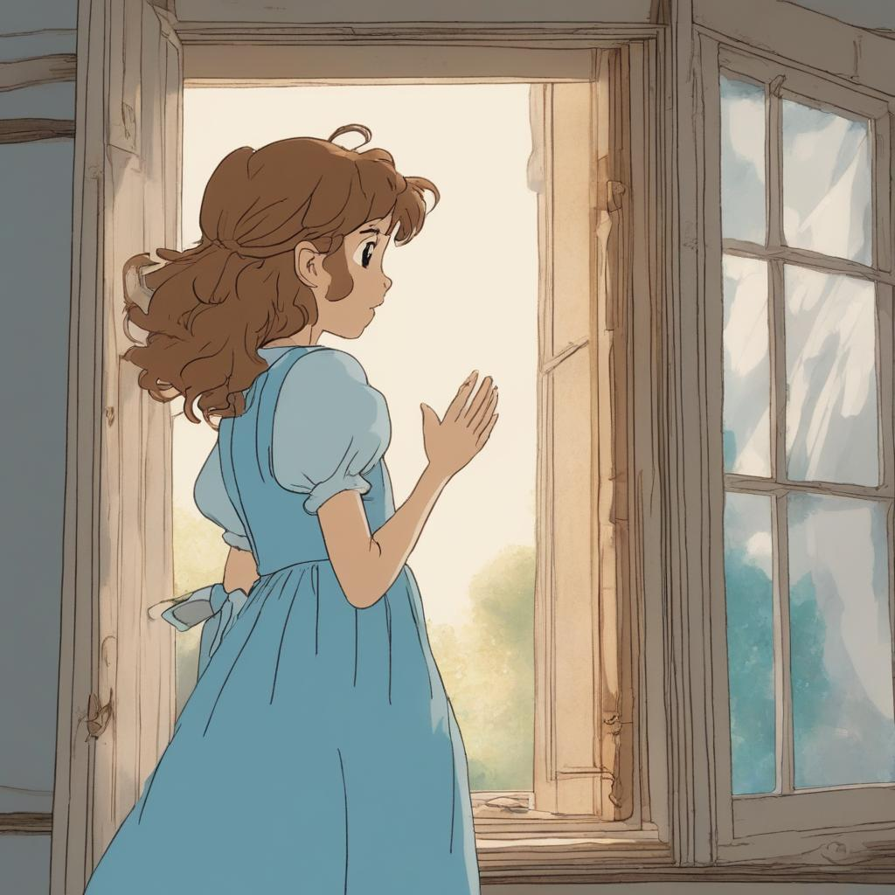
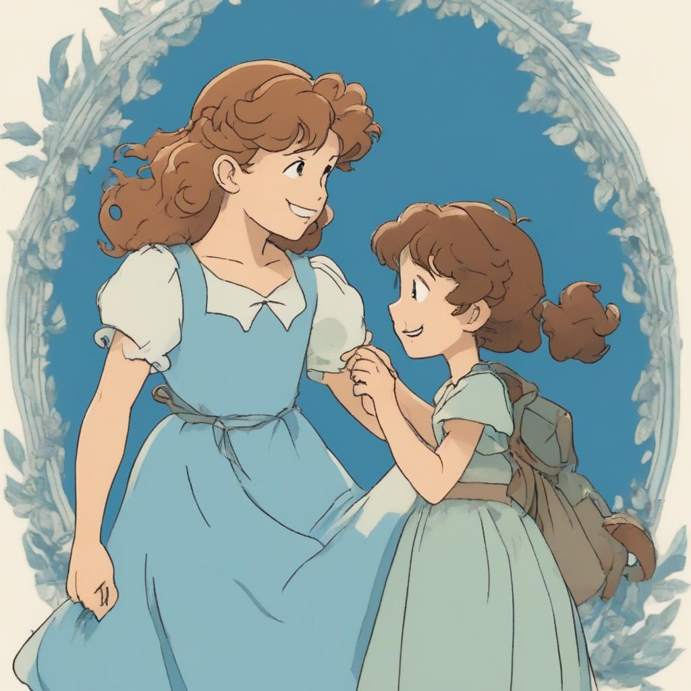

Scroll down
Ordinary World In which the hero lives their mundane life in before the adventure
The Darling family comprises of three children, Wendy, John, and Micheal, and their parents, Mr. and Mrs. Darling.
The family has been in financial hardship since the beginning of the story, and therefore cannot spend much. Though knowing this, Mr. and Mrs. Darling want the children to grow up as other children would, with similar privileges and opportunities. For instance, they even put together enough money to hire a nurse.
As chapter one states, "There never was a simpler happier family until the coming of Peter Pan."
Call to adventure In which the hero is presented with a challenge that cannot be ignored
Through the nursery window, Peter Pan comes in daily to listen to the stories Mrs. Darling tells to the children. However one night, he wakes Mrs. Darling and at the same time Nana, the nurse, enters the room. Peter Pan manages to escape but Nana captures his shadow, which Mrs. Darling later rolls up and puts in a drawer.
He comes back for it one night, with Tinker Bell, his fairy. They find it, and Peter Pan immediately starts trying to stick his shadow back on. When his attempts fail, he begins to sob, waking Wendy, who then tries to help him by sewing his shadow back in place. Later, as they talk, Peter Pan realises that Wendy knows as much stories as her mother does and wants her come to Neverland with him. Peter Pan tells Wendy of the lost boys and how they have never been cared for properly, like a mother does her children, and Wendy feels sympathy for them.
Refusal of the Call In which the hero hesitates to accept the call to adventure
Wendy hesitates at first, because she does not want to leave her family behind as she knows they will miss her.
Meeting the Mentor and Accepting the Call In which someone persuades the hero to accept the call
Peter Pan tempts Wendy with adventures she would not be able to experience in the Ordinary World. Additionally, seeing Wendy's hesitation, allows her brothers to come to Neverland as well. Knowing that at least some of her family members will be with her, Wendy accepts the call.
Crossing the Threshold In which the hero enters a new world
Wendy and her brothers begin flying to Neverland under the lead of Peter Pan and Tinkerbell, leaving the ordinary World behind.
Tests, Allies, Enemies In which the hero is presented with new challenges
As they journey to Neverland, Tinkerbell, out of jealousy of Wendy's friendship with Peter Pan, tries to lure Wendy to her death.
The lost boys, seeing Wendy approaching the the sky, mistakes her for a bird, which they call "the Wendy". Tinkerbell, aware of the lost boys' misjudgement, takes advantage of it. She tells the boys that "Peter wants you to shoot the Wendy." Thinking that he was obeying Peter's orders, one of the lost boys, Tootles, shoots Wendy with an arrow.
Approach In which the hero reassesses their situation and goal before the Supreme Ordeal
Wendy tries her best to care for the lost boys, however she never tries to replace their own mothers, and the lost boys even take an assessment she created, which tests their memories of their parents.
Overall, Wendy's understanding of the lost boys' need for a mother figure and her role in their lives grows.
Supreme Ordeal In which the hero faces their biggest challenge yet
The pirates, under the lead of Captain Hook, plot to seize the lost boys, make them walk the plank, and keep Wendy as their own mother.
One night, after Wendy tells the lost boys the story she always tells them at bedtime, which describes Wendy, John, and Micheal flying to Neverland, having a wonderful time there, and then flying back to the Ordinary World, where their parents are overjoyed to see them again, Wendy and her brothers decide to realise the story. They invite all of the lost boys to come with them, and all but Peter Pan accepts this invitation. However, at the last minute, as they are about to leave, the pirates launch a surprise attack on their home, and capture Wendy and the lost boys.
Just as the lost boys are about to walk the plank, Peter Pan boards the pirates' ship and one by one rids the ship of all the pirates, including Captain Hook who he throws to the crocodile in the water.
Reward, Seizing of the Sword In which the hero gains something from the Supreme Ordeal
Now that Wendy, her brothers, and the lost boys have been saved, they are free to travel to the Ordinary World.
The Road Back In which the hero returns to the Ordinary World
Wendy, John, Micheal, the lost boys, Peter Pan, and Tinkerbell fly back, on the pirates' ship, to the Ordinary World.
Resurrection In which the hero meets their last challenge
Wendy struggles with saying goodbye to Peter Pan, who she wishes would join her in the Ordinary World. However, she thinks of her belonging in the Ordinary World, and how her parents would feel if she left once more.
Return with Elixir In which the hero has been changed and has earned something from the journey
Wendy has come back to the Ordinary World with a newfound sense of adventure and a deeper appreciation for her family. Additionally, as Peter Pan comes back for Wendy only to find out that she is a grown-up and is too big to fly, Wendy passes on the adventure and the oppouruntiy to go to Neverland to her daughter, who Peter Pan takes instead.
